PPT Transport
Overview
The Proprietary Transport layer is designed for proprietary applications to provide over-the-air packet transmission services with the following features:
Dynamically packet format composition given mouse data.
Reliable transmission between mouse and dongle.
Long packet transmission for customized data bidirectionally.
Dynamically report rate switch based on the air traffic.
Refer to the following for the top-down overview of message transactions between mouse/dongle applications. Application messages are first packaged into packets in the Transport Layer. Then the packets are sent to the Sync Layer, which acts as the MAC to maintain data streaming and connection between devices, including channel selection and address handling.
If the devices are connected, radio operations are performed by the Sync Layer to transmit the bit-stream to the opposite site, where the bit-stream would be received and bottom-up reorganized into Applications messages and then sent to the application.
{kind=link}
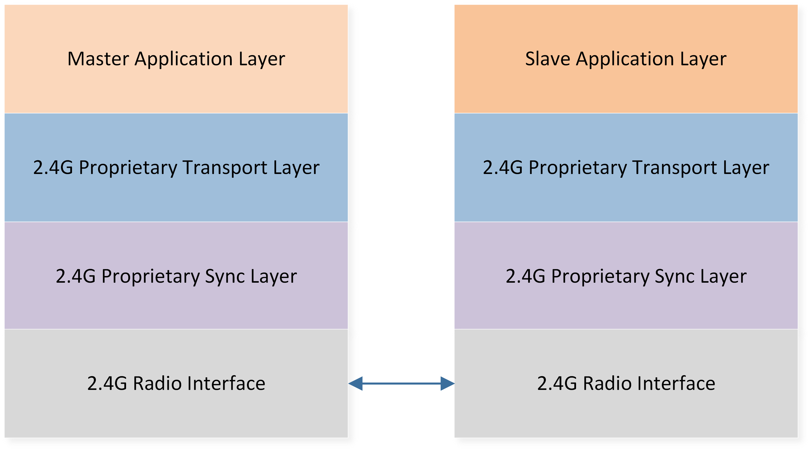
Message Transaction Overview
This application note will provide users with a comprehensive guide on how to bring up and perform secondary development based on the Transport layer.
Requirements
The sample supports the following development kits:
Hardware Platforms |
Board Name |
|---|---|
RTL87x2G HDK |
RTL87x2G EVB |
Note
Developer will need 2 sets of development kits for the demo of the Transport layer. One acts as Master Role while the other acts as Slave Role.
In here we use Trimode Mouse project and PPT Dongle as the Master/Slave role of the Transport layer for demonstration.
Building and Downloading
The Sample projects for Master/Slave can be found in the SDK folder:
Master Project file: applications\trimode_mouse\proj\rtl87x2g\mdk
Slave Project file: applications\ppt_dongle\proj\rtl87x2g\mdk
Master Project file: applications\trimode_mouse\proj\rtl87x2g\gcc
Slave Project file: applications\ppt_dongle\proj\rtl87x2g\gcc
To build and run the sample, follow the steps listed below:
Open the project files.
Select target trimode_mouse_hopping and ppt_dongle_hopping
Modify macro MOUSE_HW_SEL to MOUSE_EVB_MODE
To build the target, follow the steps listed on the Generating App Image in Quick Start.
After a successful compilation, the application binary which is named as
app_MP_xxx.binwill be generated in the directoryapplication/<trimode_mouse/ppt_dongle>/proj/<mdk/gcc>/bin.To download app bin into EVB board, follow the steps listed on the MP Tool Download in Quick Start.
Press reset button on EVB board and it will start running.
Note
The path of the generated application binary depends on which project and compiler is adopted.
Experimental Verification
After downloading both Master/Slave Role FW and Slave's CON1 Power Supply is connected to the PC via USB cable, the mouse cursor will automcatically start drawing circle after rebooting both device.
User can check the following to confirm the system work properly
Log from both Mouse & dongle should displays [ppt_8k_trans_handle_init] PPT Transport layer ver information, indicating that the initiation of transport layer module is successful
0000151 09-20#15:16:45.061 188 0001688.781 [APP] !**[ppt_8k_trans_handle_init] PPT Transport layer ver v1.2.0, role: 1
Log from the Mouse displays SYNC_EVENT_CONNECTED information, indicating that the connection is successful, as shown below.
0000233 07-25#11:12:35.018 251 0009287.531 [APP] !**[ppt_app_sync_event_cb] SYNC_EVENT_PAIRED
0000234 07-25#11:12:35.018 252 0009287.531 [APP] !**[ppt_app_sync_event_cb] SYNC_EVENT_CONNECTED
Software Design Introduction
This chapter illustrates the Transport layer from three different aspects.
The software architecture of the Transport layer.
The transactions between the Transport layer to application or sync layer.
The event handling routines of the Transport layer.
The following two improvements are adpoted to achieve 8K report rate per second in wireless mouse application.
The Sync Layer uses asymmetric 7T/1RX transactions instead of the traditional 1TX/1RX schema. Namely, the mouse(master) side will perform TX operation for straight 7 CEs and perform 1RX to receive a message from the dongle at the 8th CE. Refer to Air Transaction Schema Under 8K Report Rate for illustration
Each packet contains more than one mouse data, so that the dongle application could have HID data to report even when the stack is doing TX operation.

Air Transaction Schema Under 8K Report Rate
Source Code Directory
Source code directory:
sdk\applications\ppt_transport\src
Source files of Proprietary Transport layer are currently contain in groups as below.
└── folder: ppt_transport
├── inc includes the header files of the Proprietary Transport layer
└── src includes the source files of the Proprietary Transport layer
├── ppt_trans_handle.c Transport layer interface to application
└── ppt_trans_pkt_algo.c mouse packet algorithm implementation
└── ppt_trans_pkt_ctrl.c mouse packet data control module
└── ppt_trans_sync_ctrl.c 2.4g stack related callback functions
└── ppt_trans_long_pkt_ctrl.c long packet data control module
└── ppt_trans_test_handle.c test module scenario handler
└── ppt_trans_test_stub_sync.c test module for sync lib testing
└── ppt_trans_chann_ctrl.c RF channel control module
└── ppt_trans_pos_ctrl.c mouse position control module
└── ppt_trans_feat_ctrl.c Transport layer feature control module
Flash Layout
Application default flash layout header file: sdk\applications\trimode_mouse\proj\flash_map.h.
Example layout with a total flash size of 1MB |
Size(byte) |
Start Address |
|---|---|---|
Reserved |
4K |
0x04000000 |
OEM Header |
4K |
0x04001000 |
Bank0 Boot Patch |
32K |
0x04002000 |
Bank1 Boot Patch |
32K |
0x0400A000 |
OTA Bank0 |
620K |
0x04012000 |
|
4K |
0x04012000 |
|
32K |
0x04013000 |
|
60K |
0x0401B000 |
|
212K |
0x0402A000 |
|
308K |
0x0405F000 |
|
4K |
0x040AC000 |
|
0K |
0x040AD000 |
|
0K |
0x040AD000 |
|
0K |
0x040AD000 |
|
0K |
0x040AD000 |
|
0K |
0x040AD000 |
|
0K |
0x040AD000 |
OTA Bank1 |
0K |
0x040AD000 |
Bank0 Secure APP code |
0K |
0x040AD000 |
Bank0 Secure APP Data |
0K |
0x040AD000 |
Bank1 Secure APP code |
0K |
0x040AD000 |
Bank1 Secure APP Data |
0K |
0x040AD000 |
OTA Temp |
312K |
0x040AD000 |
FTL |
16K |
0x040FB000 |
APP Defined Section1 |
4K |
0x040FF000 |
APP Defined Section2 |
0K |
0x04100000 |
Important
To adjust Flash layout, follow the steps listed on the Generating Flash Map in Quick Start.
After Flash layout adjustment, follow the steps listed on the Generating OTA Header and Generating System Config File with new flash layout file.
After Flash layout adjustment, replace
SDK\applications\findmy\proj\flash_map.hwith the newflash_map.hand redo the Generating App Image step.
Transport Layer Module Architecture
This section will discuss the Transport Layer's module architecture from two different aspects for developers to understand it more thoroughly.
- FunctionalityThe module could be divided into sub-modules, each with different sub-routines to help complete packet transmission request from the Application Layer.
- I/O EventsBy defining the input and output event of the Transport Layer and how those events are issued, the developer could trace the service handling process and data flow in between each sub-modules.
Transport Layer Sub Modules
Transport Layer Module Architecture illustrates the Transport layer module architecture. There are mainly five sub-modules inside it.

Transport Layer Module Architecture
Sub-module |
Description |
|---|---|
PPT_TRANS_HANDLE |
Acts as a unified interface toward Application Layer and triggers the corresponding sub-routine when receiving input events from Application Layer. |
PPT_TRANS_SYNC_CTRL |
Sub-routines that are in charge of packet transmission as well as a unified interface toward Sync Layer that handles events from Sync Layer or issue requests to it. |
PPT_TRANS_PKT_CTRL |
Sub-routines in charge of packet compensation and Mouse Data management. |
PPT_TRANS_LONG_PKT_CTRL |
Sub-routines that are in charge of Long packet retransmission and Long packet data management. |
PPT_TRANS_PKT_ALGO |
Sub-routines that are in charge of packet composition and parsing. |
Transport Layer Events
We define the events from two quadrants so that developers could clearly understand how each event is triggered and what should be achieved.
Type
Application APP Events: The event comes from the Application Layer, or should be posted to Application Layer.
Sync Layer Stack Events: The event comes from Sync Layer or should be posted to Sync Layer.
Data Flow
Input Events: input data or signals to the Transport Layer.
Output Events: output data or signals from the Transport Layer.
Refer to the following's image for an overview of each input event and corresponding handling routine of Transport Layer.
{kind=link}
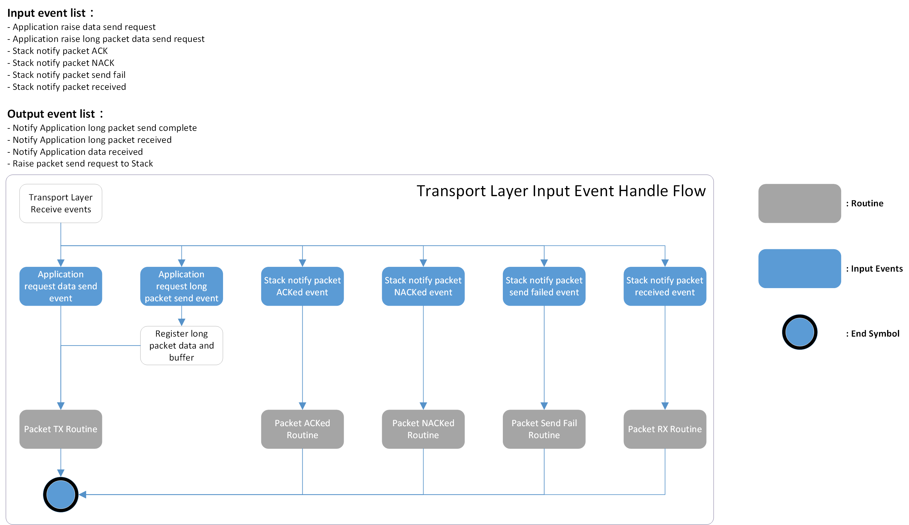
Transport Layer Event Overview
Transport Layer Event Table lists the input/output events including the type and data flow for a more comprehensive understanding
Event |
Type |
Data Flow |
Description |
|---|---|---|---|
Application request data send |
Application |
Input |
Application request to send HID-related data including optical data, button press or release, and wheel scrolls. |
Application notify data received |
Application |
Output |
After the mouse data parsing finished, this event with the parsed result is raised to the Application Layer for further processing. |
Application request long packet data send |
Application |
Input |
Application request to send customized data including OTA images, LED configurations, etc. |
Application notify long packet data received |
Application |
Output |
After the long packet receipt is completed, this event with the long packet data is raised to the Application Layer for further processing. |
Application notify long packet data send complete |
Application |
Output |
After the long packet transmission is acked, this event is raised to the Application Layer to signal that long packet processing completed. |
Stack request packet send |
Sync Layer |
Output |
After the mouse data or long packet data is composed into packets, Transport Layer issues this event to the Sync Layer for packet transmission. |
Stack notify packet ACKed |
Sync Layer |
Input |
The packet sent previously is ACKed from peer. |
Stack notify packet NACKed |
Sync Layer |
Input |
The packet sent before is NACKed, triggering the Transport Layer's compensation mechanism to ensure correct cursor offset. |
Stack notify packet send fail |
Sync Layer |
Input |
The packet is not transmitted through air. In this case, the packet is treated as dropped, triggering Transport Layer's compensation mechanism to avoid further latency increase. |
Stack notify packet received |
Sync Layer |
Input |
There are packets received from the Sync Layer to this device, the Transport Layer will parse the packet into mouse data or long packet data and then post an event to forward the data to the Application Layer. |
Transport Layer Module Transaction
This section will briefly introduce the on-air packet interface between peer devices.
Transport Layer Packet Format Schema
The throughput utilization ratio becomes essential for a higher report rate in mouse applications. The peripherals used usually have a hardware de-bounce time to avoid jittering. This implies that usually it takes several milliseconds to generate a meaningful signal, while the packet transmission is completed every several hundred microseconds, causing additional current consumption and downgrading the system efficiency because lots of repeated data are contained in every packet transmission if the packet format is fixed.
The Transport Layer supports dynamic packet format to avoid such throughput waste. Furthermore, we introduce the concept of legacy mouse data in packet transactions to make it more robust in such timing-constrained scenarios regarding higher report rates by leveraging the payload saved by the dynamic packet length. Transport Layer Packet Format illustrates the packet composition of the dynamic packet. Only the first two fields, Header and Sequence Number, are necessary in the packet. After configuring the Sequence Number, the Transport Layer will decide whether to insert corresponding fields to the packet, given button/wheel/motion/long packet data. Below, we will explain each field briefly.
{kind=link}
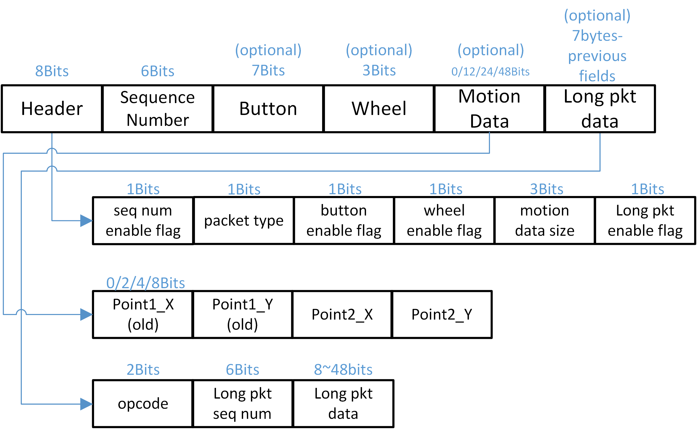
Transport Layer Packet Format
When 8k report rate is used, the largest packet length is configured as 7bytes data whereas crc is set to 3bytes as a balance point between throughput and transmission robustness considering currently RTL8762G series only supports 2M PHY bit-rate.
Header
The Header consists of different flags, which are used to communicate with the Slave whether there is a corresponding data field to parse by turning the flags on or off.
Packet Type
There are two packet types, offset and compensate, specified in the packet type field. The mouse will accumulate the cursor movement sampled by the optical sensor and sync the summation with dongle periodically by the compensate type packet to align the trajectory of cursor to prevent drifting if the air environment is terrible. On the other hand, the offset type implies a normal mouse packet that carries regular sensor data in this packet.
Sequence Number
The Sequence Number is controlled by the Master, and has different purposes for both the Master and Slave.
- Master
The Sequence Number is parsed by the Master when receiving an ACK or NACK event from Sync Layer to decide whether this packet needs retransmission. Sequence Number is added by one per Packet Send Request Event.
- Slave
Every packet carries two legacy motion data that serve as backup for the previously sent packet. If the Slave finds the Sequence Numbers between two consecutive packets are not continuous, it knows that packets dropped between this two packets, and the legacy data should be applied to recover the cursor drift.
Note
If Packet Send Fail Event happens after Packet Send Request Event, the Sequence Number will go back to original value before the Packet Send Request Event
Motion Data
The Motion Data field defines the sampled offset data generated by the optical sensor. Whenever a pair of motion offset data is ready for transmission, the Transport Layer finds one legacy motion data nearest to it as packet data. If there are no enough legacy data, zero motion data is used to compose the packet. The following figure illustrates an example of adopted motion datum in the packet where new motion data is generated every 125us.

Legacy Motion Data
Long Packet Data
The design purpose of the long packet is to allow customized data transmission like DPI configuration or light effect synchronization aside from normal mouse data. User data will be split automcatically into several pieces and carried in each packet. Those segments will be re-organized at peer device. A CRC16 checksum algorithm is applied to the re-organized data for authentication.
Transport Layer Packet Long Packet Schema
When the packet re-organization is finished, the Transport Layer appends pre-registered long packet data to the packet to its' maximum. Each long packet must bring a two-bit Opcode and a six-bit Long Packet Sequence Number as the metadata. This implies that the packet length must not exceed seven bytes before appending Long Packet data. The Transport Layer builds a table to store mapping information between the Long Packet Sequence Number and offset of corresponding data carried in this packet for Long Packet retransmission whenever receiving a NACK event. The Long Packet Sequence Number pluses one when a new data segment is appended after the packet.
Transport Layer Channel Control Schema
To improve the quality of 2.4G packet transmission and reduce interference from access points (APs) or other transmitters, we offer two channel control options:
Channel Sweeping Mechanism: This method leverages a channel monitor that is triggered every second to evaluate the performance of 2.4G packet transmission. Based on its assessment, the system can decide whether to initiate channel sweeping for optimizing transmission.
Channel Traverse Mechanism: This approach automatically switches the transmitting channel when disruptions are detected on the current channel, ensuring seamless communication.
By implementing these mechanisms, we aim to enhance transmission reliability and effectively manage channel interference.
It should be noted that the Channel Traverse method cannot coexist with the Channel Statistic method. Consequently, a build error will occur if the user enables both macros simultaneously.
#if PPT_TRANS_FEATURE_SUPPORT_CHANNEL_CTRL && PPT_TRANS_FEATURE_SUPPORT_CHANNEL_TRAVERSE
#error "Cannot enable both feature simutaniously"
#endif
Channel Sweeping Mechanism
First, we introduce the Channel Sweeping Mechanism, which can also be referenced as Channel Statistic in the code section. Users can select the channel sweeping method by configuring the following macro:
#define PPT_TRANS_FEATURE_SUPPORT_CHANNEL_CTRL 0 /** Enable channel statistic control method */
It is important to note that the effectiveness of the channel sweeping mechanism depends on using long packets to transfer channel statistic data. The process flow of the channel sweeping mechanism is as follows:
The channel monitor is triggered every second.
The monitor evaluates the performance of the 2.4G packet transmission, taking into consideration factors like packet loss, delay, and interference.
Based on the evaluation, the monitor decides whether a channel sweeping operation is necessary.
If channel sweeping is determined to be needed, the monitor initiates the process.
During the channel sweeping operation, the monitor scans for available 2.4G channels and selects the one with the least interference.
Once the ideal channel is identified, the monitor switches the connection to the selected channel.
The process repeats every second to continuously monitor and optimize the 2.4G packet transmission.
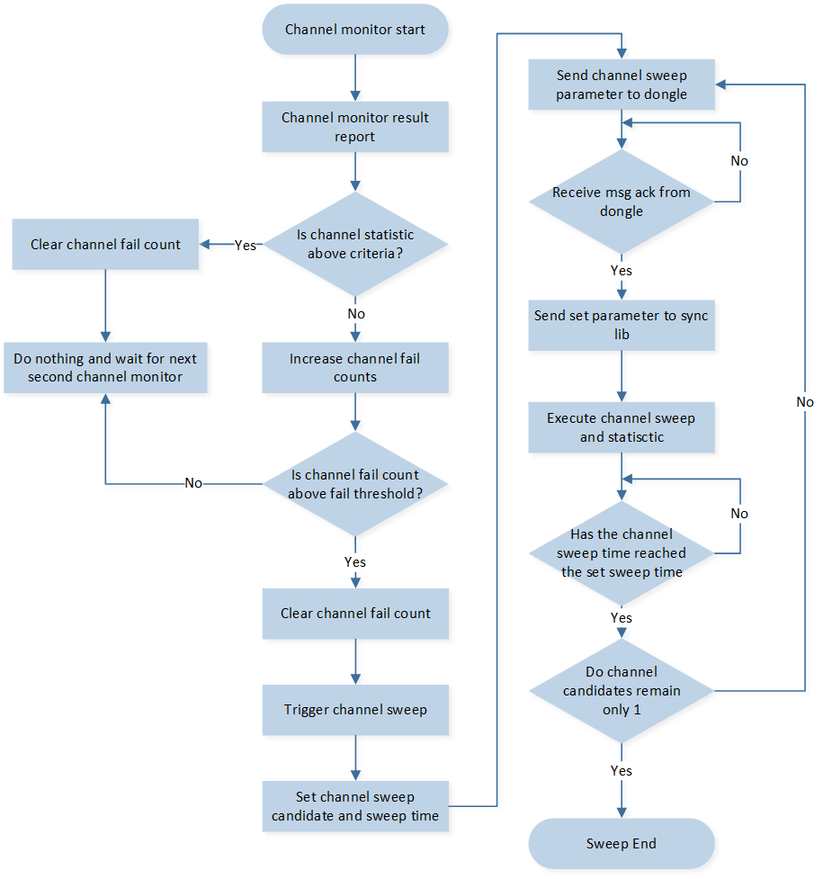
Channel Sweeping Flow Chart
Refer to the following figure for an overview of transport layer event and corresponding handling in 2.4G master and slave.
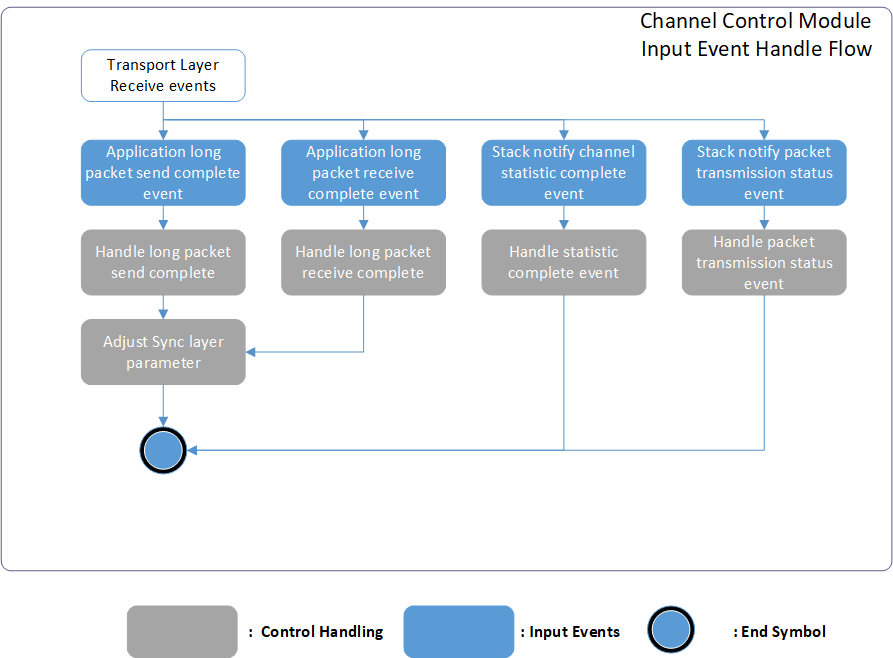
Channel Control Module Overview
Below is the detail explanation of each input event defined in correspond (Channel Control Module Overview).
Application APP Events
Application long packet send complete event.
When long packet send complete, application will be notified.
When channel control related command send complete, the channel control module will receive the corresponding event, the following are the handling APIs.
ppt_trans_chann_ctrl_sweep_channel_cb()
ppt_tans_chann_ctrl_change_channel_cb()Application long packet receive complete event.
When long packet receive complete, application will be notified.
The channel control module will receive channel control related commands, the following is the handling API.
ppt_tans_chann_ctrl_long_pkt_rcv_cb()
Sync layer Stack Events
Stack notify channel statistic complete event.
Receive channel statistic result, and channel control module can perform further operation based on received result. The following is the handling API.
ppt_trans_chann_ctrl_get_result()Stack notify packet transmission event.
The packet sent previously is ACKed from peer. The following is the handling API.
ppt_trans_chann_ctrl_ack_cnt_inc()Stack notify packet NACKed event.
The packet sent previously is NACKed from peer. The following is the handling API.
ppt_trans_chann_ctrl_nack_cnt_inc()Stack notify packet send fail event.
The packet sent previously is send fail. The following is the handling API.
ppt_trans_chann_ctrl_send_fail_cnt_inc()
Channel Contorl Module Adjustable Parameters
For channel sweeping performance tuning, we offer several parameters that users can adjust to optimize the channel sweeping mechanism according to their specific requirements.
/*This parameter determines the interval at which the channel monitor is triggered.
It defines the duration, measured in milliseconds, between each activation of the channel monitor.*/
#define PPT_TRANS_CHANN_MONITOR_ITVL 1000
/*This parameter defines the minimum duration for channel usage in the channel control module.
It determines the amount of time the channel should be utilized after executing channel hopping.
The unit of measurement for this parameter is milliseconds.*/
#define PPT_TRANS_MIN_CHANN_USAGE_TIME (2 * 1000)
/*This define the trigger threshold for the channel monitor. The parameter determines
the minimum acceptable ACK receive rate for the 2.4G packet transmission. This threshold
is defined as a percentage value. For example, if the trigger threshold is set to 98%, it
means that the 2.4G packet transmission system expects to receive at least 98% of the
ACKs from the 2.4G slave device. To put it in perspective, if 7000 packets are sent, the
system would expect to receive a minimum of 6860 ACKs.
By setting a higher trigger threshold, the system becomes more sensitive to the
environment and demands a higher success rate in terms of ACK reception. This can help
ensure a more reliable and efficient 2.4G packet transmission by minimizing the chances
of packet loss or interference. */
#define CHANN_MONITOR_CHANN_SWEEP_THRESH 95
/*This define the channel disqualify trigger counts threshold for the channel monitor. The
parameter determines the number of consecutive failures to meet the ACK receive rate
trigger threshold before a channel is viewed as disqualified. This threshold is specified by
a count value.
For example, if the disqualify trigger counts threshold is set to 3, it means that if a
channel fails to meet the ACK receive rate trigger threshold for 3 consecutive times, the
channel monitor will consider the channel disqualified and will execute channel sweeping to
select a new channel.
By setting a lower disqualify trigger counts threshold, the system will become more
sensitive to the environment and reacts quickly to unfavorable channel conditions.*/
#define SWEEP_TRIGGER_THRESH_COUNT 3
/*The parameter determines the duration for which the monitor scans and evaluates each
available channel during the sweeping operation. Users can adjust this duration based on
the size of the network and the time required for accurate channel analysis. The
parameter is defined in milliseconds.
For example, if the parameter is set to 200 milliseconds, it means that the channel
monitor will sample and evaluate each channel candidate for a period of 200 milliseconds.
During this time, the monitor collects statistical data and performance metrics for analysis
and decision-making.
By setting a larger value for the total accumulated time, the channel sweeping process will
take more time as each channel is evaluated for a longer duration. This can result in a
higher level of accuracy and reliability in determining the performance of each channel.*/
#define PER_CHANNEL_SWEEPING_TIME 200
/*The definition of this parameter is same as previous. The difference is that this
parameter is only used when the master and slave are performing reconnection*/
#define PER_RECONN_CHANNEL_SWEEPING_TIME 100
/*The definition of this parameter is same as previous. The difference is that this
parameter is only used when the master and slave first connected.*/
#define PER_CONN_CHANNEL_SWEEPING_TIME 500
Channel Sweep When Connected
In a scenario where a 2.4GHz master and slave are connected, there's a provision for an additional channel sweep based on the time delta since the last disconnect. If the time delta is below a specific threshold, it indicates that the environment hasn't changed significantly since the previous connection.
In such cases, the module can determine that the previously obtained channel candidates from the channel sweep are still valid and can be reused. By reusing the previous channel sweep results when the environmental conditions are considered stable, the module optimizes the channel selection process.
This approach saves time and resources by avoiding unnecessary channel sweeps when the environment is expected to remain relatively unchanged. Using the previous channel sweep candidates assumes that the optimal channels for communication have not significantly shifted, leading to more efficient and seamless reconnection between the 2.4GHz master and slave.
Overall, this strategy enhances the efficiency of the channel selection process by reusing previous channel sweep results in scenarios where the environment is deemed stable and enables a faster and more reliable reconnection between the master and slave devices.

Connected Channel Sweeping Flow Chart
There are severl parameters for this scenario, the detail is shown as follow.
/*This define the lenth of the paratial set of the channel candidate. For example, by
setting the parameter to 4, the channel sweeping module will maintain a partial set
consisting of the best 4 channels. These channels will be considered as the channel
candidates when the 2.4GHz connection is lost and needs to be reestablished. The length
value shall smaller than the length of the full set channel candidates.
*/
#define LOST_RECONN_SWEEP_CHANN_LEN 4
/*This define the time threshold for channel monitor whether to use the partial set of the
channal candidates of not, the unit is define in milliseconds. For example, by setting the
parameters to 1500. When connected if the time delta since last disconnect is below 1500
ms, it may indicate that the environment has not changed significantly since the previous
connection, and the previous channel sweep result can be reused.*/
#define CONSIDER_LOST_DURATION 1500
Bad Environment Protection
In certain scenarios where the current environment is chaotic and lacks qualified channels for 2.4GHz transmission, the channel sweeping process itself can introduce additional interference to the 2.4GHz communication.
To address this, the channel monitor incorporates a mechanism to dynamically adjust the channel sweep trigger threshold if it is rapidly triggered in quick succession.
When the channel sweep is triggered frequently within a short timeframe, it indicates that the available channels are not stable or suitable for transmission due to heavy interference or other issues. In such cases, continuing with the channel sweep as usual could exacerbate the interference and lead to degraded performance.
To mitigate this, the channel monitor lowers the channel sweep trigger threshold when it detects rapid triggering. By lowering the threshold, the module reduces the frequency of channel sweeping and the associated interference caused by the process.
This adaptive approach allows the channel monitor to respond to the dynamics of the environment and prevent additional interference from the channel sweep process itself. By adjusting the trigger threshold, the module can strike a balance between evaluating the available channels and minimizing interference, ultimately improving the overall performance and stability of the 2.4GHz transmission. The flow chart is shown as follow.

Bad Environment Protection Flow Chart
There are severl parameters for this scenario, the detail is shown as follow.
/* These two parameters, BAD_ENVIRONMENT_MONITOR_TIME and
CONSIDER_BAD_ENVIRONMENT, work together to define the condition for rapid triggering.
BAD_ENVIRONMENT_MONITOR_TIME is defined in seconds and represents the time interval
within which the channel sweep triggers are monitored. It determines the duration over
which the channel sweep trigger count is evaluated.
CONSIDER_BAD_ENVIRONMENT is defined in count and represents the threshold for the
number of channel sweep triggers within the specified time interval. If the channel sweep
is triggered equal to or more than the specified count within the defined time interval, the
condition of rapid triggering is considered to be met.
For example, if the parameters are set to 20 seconds and 3 times, it means that the
channel sweep triggers are monitored within a 20-second interval. If the channel sweep is
triggered 3 times or more within this 20-second interval, it is considered to be a rapid
triggering condition and the module will lower the channel sweeping trigger threshold for
chaotic environment protection.
*/
#define BAD_ENVIRONMENT_MONITOR_TIME 20 //seconds
#define CONSIDER_BAD_ENVIRONMENT 3
/*The parameter determines the duration for which the channel monitor will lower the
channel sweeping trigger threshold when rapid triggering is detected. It is defined in
milliseconds.
For example, if you set the parameter to 60000 milliseconds (60 seconds), it means that
when the channel sweep is triggered rapidly and the condition for rapid triggering is met,
the channel monitor will lower the channel sweeping trigger threshold for a duration of 60
seconds.
*/
#define BAD_ENVIRONMENT_PROTECT_TIME 60000
/*The definition of this parameter is same as SWEEP_TRIGGER_THRESH_COUNT and is the
trigger criteria for chaotic environment.
*/
#define BAD_EVN_SWEEP_TRIGGER_THRESH 5
/*The definition of this parameter is same as CHANN_MONITOR_CHANN_SWEEP_THRESH
and is the trigger criteria for chaotic environment.
*/
#define BAD_EVN_CHANN_SWEEP_THRESH 90
Channel Sweep Early Termination
In addition, there is an early termination condition for channel sweeping. Consider the following scenario: when the 2.4G channels are free from any interference, all channels are expected to provide good transmission conditions. Consequently, choosing the best channel from the sweeping transmission statistic results becomes challenging. To address this challenge, a maximum sweeping count is set as an early termination condition for the channel sweeping process.
The maximum sweeping count parameter determines the maximum number of channel sweeps that will be performed before terminating the channel sweeping process. If, after executing the maximum sweeping count, the system has not been able to select the best channel, the 2.4G master device will terminate the channel sweeping and choose the current best channel as the transmission channel.
There is a parameter for this scenario, the detail is shown as follow.
/* This parameter determines maximum number of channel sweeps that will be performed
before terminating the channel sweeping process.
*/
#define MAX_SWEEP_COUNT 7
Channel Sweep Fail Safe Mechanism
To ensure the successful transmission of the channel sweeping command to the peer device, a protection mechanism is in place. If the 2.4G slave device fails to receive the channel sweeping command within a predefined time period or the 2.4G master fails to send out the channel sweeping command, the correspond device will initiate a disconnect command and then attempt to reconnect to the 2.4G master device.
This protection mechanism aims to prevent situations where the channel communication is interrupted or the slave device misses important commands. By triggering a disconnect and subsequent reconnection, the slave device gives itself another opportunity to establish a reliable connection with the master device and receive the necessary commands, including the channel sweeping command.
This mechanism helps maintain the integrity of the channel sweeping process and ensures that all devices involved in the communication system are synchronized and able to perform their tasks effectively.
There is a parameter for this scenario, the detail is shown as follow.
/* This parameter is set for 2.4G slave device, This parameter determines the
acceptable time difference between consecutive channel sweeping commands, and it is
measured in milliseconds.
For example, if there are 15 channels and each channel takes 200 milliseconds to sample
and evaluate, with a parameter set to 90 milliseconds for the expected tolerance of the
time delta, the 2.4G slave device would expect to receive the next channel sweeping
command within 3090 milliseconds (15 channels * 200 ms + 90 ms = 3090 ms).
If the 2.4G slave device does not receive the next channel sweeping command within this
expected timeframe, it will initiate a disconnect command and then attempt to reconnect
to the 2.4G master device. This protection mechanism ensures that the slave device can
maintain synchronization with the master device and receive the necessary commands for
the channel sweeping process.
*/
#define CONN_PROTECT_OFFSET 90
Emergency Channel Mechanism
Furthermore, when performing channel sweeping we will choose the best channel as main channel and another channel as emergency channel. The meaning of the emergency channel is that when main channel is heavily disturb cause 2.4G master or slave cannot receive any packet from peer. The device will try to switch the channel from main channel to emergency channel.
During the process of channel sweeping, we will choose the best channel as the main channel and designate another channel as the emergency channel. The purpose of the emergency channel is to act as a backup option in case the main channel experiences heavy interference. In situations where the 2.4G master or slave devices are unable to receive any packets from their peers due to severe disturbance on the main channel, the devices will attempt to switch from the main channel to the emergency channel.
By having an emergency channel configured, devices can maintain communication and connectivity even in scenarios where the main channel becomes unusable. This allows for continuous operation and mitigates the impact of interference on the overall system performance.
The current criteria for selecting the emergency channel is based on the channel bandwidth delta with the main channel. Specifically, the second best channel is chosen if its channel bandwidth delta with the main channel is larger than the set threshold.
The parameter for this scenario define as follow.
/* This parameter determines the minimn channel bandwidth delta with the emergency
channel and the main channel. For example if the main channel is 2442 (MHz) than the
emergency channel should greater than 2467 (Mhz) or lesser than 2417 (MHz)
*/
#define EMERGENCY_CAHNNEL_MIN_DELTA 25
This approach takes into consideration the fact that disturbances and interference can affect not only the main channel but also other channels in its vicinity. By selecting a channel with a larger channel bandwidth delta from the main channel, it is more likely that the emergency channel will experience less interference and provide a more reliable communication environment.
Considering the impact of nearby channels helps to account for the potential spread of interference and ensures that the emergency channel is sufficiently isolated from the disturbances affecting the main channel.
However, in the scenario where no channel meets the criteria outlined for the emergency channel selection, the alternative approach is to select the second best channel as the emergency channel. This means that if no channel has a channel bandwidth delta larger than the set threshold, the second best channel will still be chosen as the emergency channel.
The flow is chart is show as follow:

Emergency Channel Selection Flow Chart
Channel Control Module APIs
Finally, the channel control module provides functionality for managing and controlling communication channels. It allows users to perform various operations related to channel control, the are list as following.
/**
* @brief channel control module init, shall only called by 2.4G master.
* @return none
*/
void ppt_trans_chann_ctrl_master_init(void);
/**
* @brief channel control module init, shall only called by 2.4G slave
* @return none
*/
void ppt_trans_chann_ctrl_slave_init(void);
/**
* @brief command 2.4G master to perfoem channel sweep.
* @param len - length of the channel index array
* @param chan_idx - pointer of the channel index array
* @param sweep_time - period of time for each channel
* @return command success or fail
* @retval true command success
* @retval false command fail
*/
bool ppt_trans_chann_ctrl_command_sweep_channel(uint8_t len, uint8_t *chan_idx,
uint16_t sweep_time);
/**
* @brief this api will process the statistic result of each channel when channel sweeping
* complete.
* @param param - the statistic result for each channel candidate
* @return none
*/
void ppt_trans_chann_ctrl_get_result(sync_chann_param_t param);
/**
* @brief handle channel control module when 2.4G master and slave disconnected.
* @return none
*/
void ppt_trans_chann_ctrl_handle_disconnect(void);
/**
* @brief handle channel control module when 2.4G master and slave connected.
* @return none
*/
void ppt_trans_chann_ctrl_handle_connect(void);
/**
* @brief To get whether 2.4G device is performing channel sweeping.
* @return channel sweeping status
* @retval true no channel sweeping ongoing
* @retval false channel sweeping ongoing
*/
bool ppt_trans_chann_ctrl_is_idle(void);
/**
* @brief ACK count statistic for channel monitor.
* @return none
*/
void ppt_trans_chann_ctrl_ack_cnt_inc(void);
/**
* @brief NACK count statistic for channel monitor.
* @return none
*/
void ppt_trans_chann_ctrl_nack_cnt_inc(void);
/**
* @brief Send fail count statistic for channel monitor.
* @return none
*/
void ppt_trans_chann_ctrl_send_fail_cnt_inc(void);
/**
* @brief Declared for long packet module, will be referenced
* when channel control long packet reception completes.
* @param result - long packet receive status.
* @param pkt_data - pointer of received long packet data.
* @param len - length of received long packet data
* @param info - 2.4G related info.
* @return none
*/
void ppt_tans_chann_ctrl_long_pkt_rcv_cb(bool result, uint8_t *pkt_data, uint16_t len,
sync_receive_info_t info);
/**
* @brief handle channel control module when 2.4G slave disconnect with master,
* shall only be called by 2.4G slave.
* @return none
*/
void ppt_trans_chann_ctrl_slave_handle_disconnect(void);
Channel Traverse Mechanism
In this section, we introduce the Channel Traverse Mechanism. Users can select the channel traverse method by configuring the following macro:
The code is implemented in the sync library. The Channel Traverse approach will automatically switch the transmitting channel when disruptions are detected on the current channel to ensure seamless communication. The process flow of the channel traverse mechanism is as follows:
Initial Connection: When the 2.4GHz master and slave are connected, the system will start transmitting on a channel.
Detection of Disruption: When the transmission is disrupted (i.e., either the master or slave receives no packets from the peer), a channel traverse method will be initiated.
Channel Switching Based on Time Counter: The device will switch the transmission channel based on a connected time counter.
Reattempt Communication: If the system still cannot re-establish communication in the selected channel, the device will again switch to another transmission channel (step 3).
Successful Re-establishment: If the system can re-establish communication (i.e., receives packets from the peer) in the selected channel, the device will stay on the selected channel.

Channel Traverse Flow Chart
Transport Layer Position Control Schema
Position Contorl Module Overview
In the current 2.4G packet transmission mechanism, the packets convey crucial information in the form of x-axis and y-axis displacement vectors. These vectors play a vital role in accurately tracking the movement of a mouse. However, the reliability of 2.4G transmission can be compromised by the presence of external interferences. These interferences can disrupt the smooth flow of packets, resulting in packet loss.
The consequences of such packet loss can be problematic. When packets are dropped, it causes a misalignment in the sequence of displacement vectors. As a result, the respective 2.4G master and slave devices may develop divergent perceptions of the mouse position. This discrepancy in perception, in turn, leads to notable errors in determining the precise location of the terminal cursor.
To illustrate the impact of vector misalignment, let's consider an example with the vectors (3,4), (5,-2), and (1,3). If these vectors are received in the correct order, the resulting cursor position would be (3,4) -> (8,2) -> (9,5). However, if misalignment occurs and we receive the vectors in the order (3,4), (1,3), (5,-2), the cursor position would be calculated as (3,4) -> (4,7) -> (9,5). Here, we can clearly see that the position of point 2 is incorrect due to the misalignment.
To ensure precise mouse pointer positioning, we have implemented a position synchronization control mechanism. Recognizing the potential inaccuracies caused by misalignment in the sequence of displacement vectors, the 2.4G slave device has been programmed to ignore packets that are not in the correct order. This prevents erroneous positioning from occurring due to out-of-sequence packets.
Furthermore, to maintain synchronization between the 2.4G master and slave devices, periodic updates of the total sum of the displacement vector are performed. This means that at regular intervals, the master device transmits the current sum of the displacement vector to the slave device. Upon receiving this sum from the master, the slave updates its own position accordingly. This synchronization process ensures that both devices have consistent and up-to-date information about the mouse's position.
By incorporating this position synchronization control mechanism, we maximize the accuracy of the mouse pointer's positioning, reducing any discrepancies that may arise due to misaligned displacement vectors. The robust and regular synchronization of vector sum data between the master and slave devices allows for smooth and reliable tracking of the mouse's movement, leading to improved precision in the final position of the terminal cursor.
The flow chart is shown as follow.

Position Control Packet Handling Flow Chart
Refer to the following Figure for an overview of transport layer event and corresponding handling in 2.4G master and slave.
{kind=link}
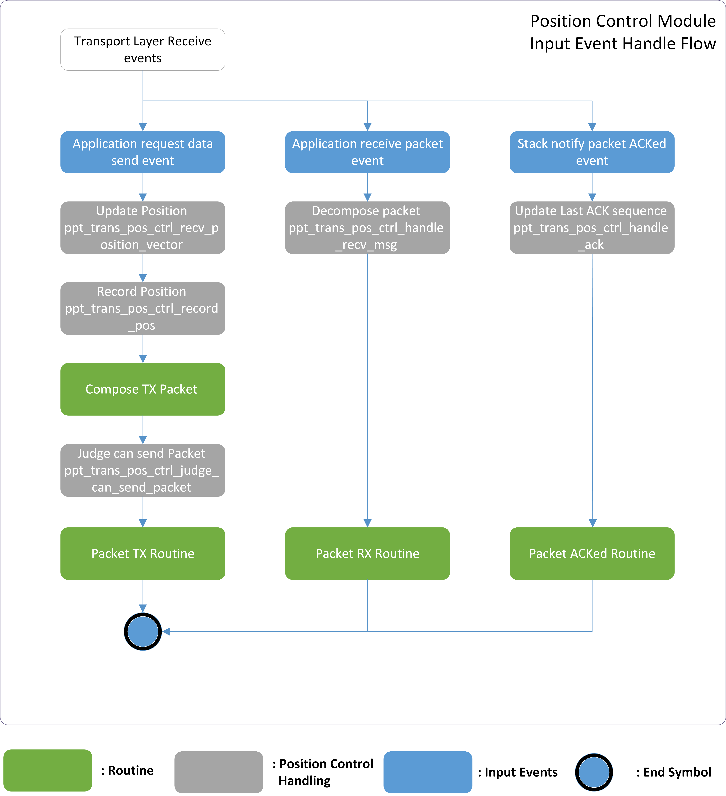
Position Control Module Overview
Below is the detail explanation of each input event defined in correspond (Position Control Module Overview).
Application APP Events
Application request data send event.
Application request to send HID-related data including optical data, displacement vector data, button press or release, and wheel scrolls.
Position control module will update and record the position of the cursor based on received displacement vector data.
Before transferring the packet, the position control module will first judge whether this packet is valid to send, if not the packet we will abandon this packet.
Application receive packet event.
Application receive HID-related data including displacement vector data, button press or release, and wheel scrolls from peer.
Position control module will decompose the packet and calculate new position based on received displacement vector data. Then transfer the position data to USB layer.
Sync layer Stack Events
Stack notify packet ACKed event.
The packet sent previously is ACKed from peer.
Position Control Module APIs
The parameters for this control schematic are define as follow.
/* This parameter determines the synchronized interval of position
displacement vector sums between 2.4G master and slave. For instance, if
this parameter is set to 5, it signifies that the 2.4G master will attempt to
transmit its vector sum every 5 packets. This synchronization interval allows
the master and slave devices to exchange information and ensure that their
displacement vectors are kept in harmony. By periodically transmitting the
vector sum, the master device keeps the slave device updated with the
latest displacement information. This allows for accurate tracking and
positioning of the cursor on the receiving end.
*/
#define PPT_TRANS_POS_CTRL_SYNC_INTERVAL 5
In addition, a new data structure is define for this module.
typedef union
{
struct
{
int32_t pos_x;
int32_t pos_y;
};
uint8_t d8[8];
} T_PPT_TRANS_POS_VECTOR_SUM;
Finally, the following are the API provide by the positon control module.
/**
* @brief get the previous record position which store in the hist_pos array.
* @param idx - the recording index of the hist_pos array
* @return the position record of the previous moment.
*/
T_PPT_TRANS_POS_VECTOR_SUM ppt_trans_pos_ctrl_get_hist_pos(uint8_t idx);
/**
* @brief update the record position directly.
* @param new_pos - the new position.
*/
void ppt_trans_pos_ctrl_update_pos(T_PPT_TRANS_POS_VECTOR_SUM new_pos);
/**
* @brief update record packet receiving anchor directly.
* @param seq - the sequence number of the received packet
* @param ce - the time anchor when receiving packet
*/
void ppt_trans_pos_ctrl_update_recv_ankor(uint8_t seq, uint16_t ce);
/**
* @brief update the record positon based on the received displacement vector.
* @param x - the position displacement on x-axis
* @param y - the position displacement on y-axis
* @return the updated position.
*/
T_PPT_TRANS_POS_VECTOR_SUM ppt_trans_pos_ctrl_recv_position_vector(int16_t x, int16_t y);
/**
* @brief judge whether the received packet is consecutively to prevent misalignment.
* @param seq - the sequence number of the received packet
* @param ce_cnt - the time anchor when receiving packet
* @param range - the tolerance for sequence skip
* @return the validation result of the packet, 0 is invalid otherwise valid packet
*/
uint8_t ppt_trans_pos_ctrl_judge_pkt_valid(uint8_t seq, uint32_t ce_cnt, uint8_t range);
/**
* @brief position control module init, reset the parameter.
* @return none
* @retval void
*/
void ppt_trans_pos_ctrl_init(void);
/**
* @brief store - the currently position to the hist_pos array for future usage.
* @param idx - the recording index of the hist_pos array
*/
void ppt_trans_pos_ctrl_record_pos(uint8_t idx);
/**
* @brief reset record position history data which store in the hist_pos array.
* @return none
*/
void ppt_trans_pos_ctrl_clear_hist(void);
/**
* @brief get the sequence number of previous valid received packet
* @return sequence number of packet
*/
uint8_t ppt_trans_pos_ctrl_get_prev_seq(void);
/**
* @brief reset the current position.
* @return none
*/
void ppt_trans_pos_ctrl_clear_pos(void);
/**
* @brief handle positon control module when 2.4G master and slave disconnected.
* @return none
*/
void ppt_trans_pos_ctrl_handle_disconnect(void);
/**
* @brief handle positon control module when 2.4G master and slave connected.
* @return none
*/
void ppt_trans_pos_ctrl_handle_connect(void);
/**
* @brief ppt_trans_pos_ctrl_handle_recv_msg
* @param p_data - pointer to receive data.
* @param len - data length.
* @param rssi - ble rssi of data
* @return none
*/
void ppt_trans_pos_ctrl_handle_recv_msg(uint8_t *p_data, uint16_t len,
sync_receive_info_t *info);
/**
* @brief register app callback for receiving data for position control module
* @param cb - callback function when packet received
* @return none
*/
void ppt_trans_pos_ctrl_reg_receive_pos_cb(ppt_trans_handle_receive_pos_pkt_cb cb);
/**
* @brief handle positon control module when 2.4G master recv slave ack.
* @param seq - the sequence number of the packet
* @param is_pos_packet - indicate that whether the packet is a position packet or not
* @return none
*/
void ppt_trans_pos_ctrl_handle_ack(uint8_t seq, bool is_pos_packet);
/**
* @brief handle positon control module when 2.4G master recv slave nack.
* @return none
* @retval void
*/
void ppt_trans_pos_ctrl_handle_nack(uint8_t seq, bool is_pos_packet);
/**
* @brief record u32 sequence and u8 seqence for position control usage.
* @return none
* @retval void
*/
void ppt_trans_pos_ctrl_handle_rec_seq(uint8_t seq, uint32_t u32_seq);
/**
* @brief judge whether the packet should be change to position packet or not.
* @param seq - the sequence number of the packet
* @param u32_seq - the uint32_t sequence number of the packet
* @return whether the packet should be change to position packet or not.
* @retval true packet need to be position packet.
* @retval false packet no nned to be changed.
*/
bool ppt_trans_pos_ctrl_judge_force_pos_packet(uint8_t seq, uint32_t u32_seq);
/**
* @brief handle positon control module when 2.4G report rate is changed.
* @return none
*/
void ppt_trans_pos_ctrl_handle_report_rate_change(void);
/**
* @brief set position control force position parameter.
* @param msg_quota - the msg quota of sync lib
* @retval none
*/
void ppt_trans_pos_ctrl_set_pos_pos_seq_gap(uint8_t msg_quota);
Transport Layer Module Routines
In this section, we briefly go through each input event handling routine defined in the Transport Layer for developers' reference.
Transport Layer Packet TX
When the Transport Layer receives send events from the Application Layer, it will save the input data and trigger Packet Tx Routine. the Transport Layer finds previously NACKed packet with mouse data not sent successfully, the input data sums up with the packet data before pushing to the TX Buffer to compensate for the cursor offset.
{kind=link}
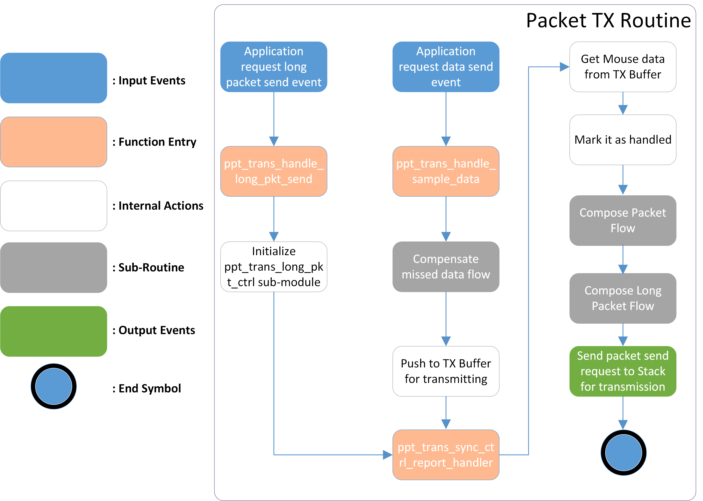
Packet Tx Routine
The Compensate Missed Data Flow is responsible for mouse data correction. For example, suppose NACKed events happened consecutively, causing the backup data unavailable to cover the packet miss. In that case, NACKed packet data are applied in it for cursor offset correction.After that, the Compose Packet Flow converts mouse data into packets with dynamic packet length.

Compensate Missed Data Flow

Compose Packet Flow
After the packet is configured given input mouse data, the Compose Long Packet Flow is responsible for appending the Application specified data to create the final packet.

Compose Long Packet Flow
Transport Layer Packet RX
When a packet is received and reported from the Sync Layer, the Packet Rx Routine is executed to parse the packet and forward the result to the Application Layer.

Packet Rx Routine
The Parse Packet Flow sub-routine is responsible for parsing the packet and converting it to mouse data for the Application Layer to reference.
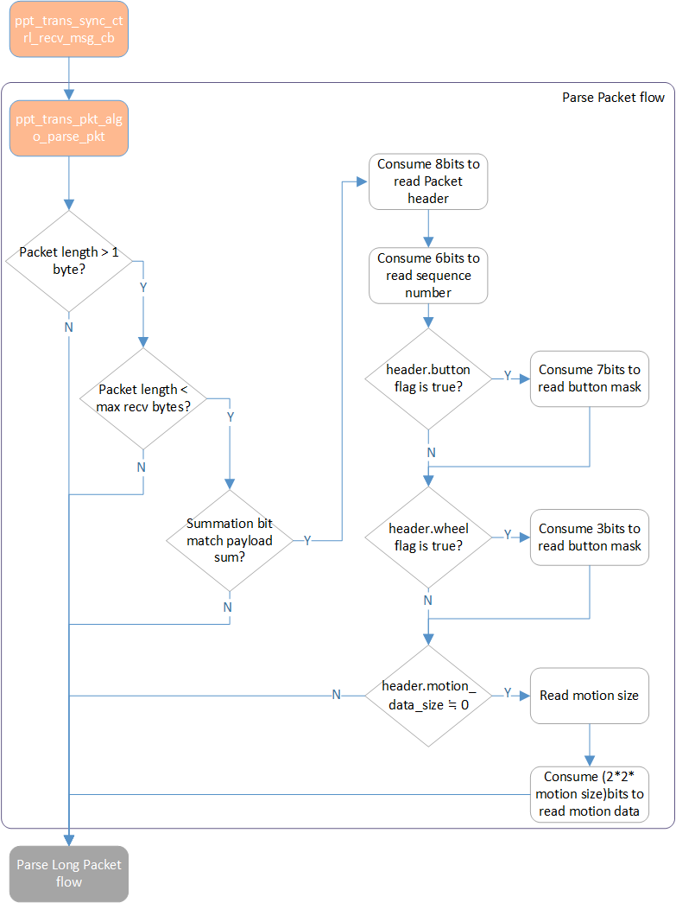
Parse Packet Flow
And the Parse Long Packet Flow sub-routine is used to collect the Long Packet segments in each packet. After the last segment received, the Transport Layer will re-organize the segments to original data and send it to the Application Layer.

Parse Long Packet Flow
Transport Layer Packet NACK
When a NACKed event is received from the Sync Layer, two corresponding routines are applied for mouse cursor compensation and long packet retransmission. The Transport Layer executes the following Packet NACKed Flow for cursor data retransmission and mouse data correction.
Note
Only the latest mouse data in the packet is saved to NACK Buffer, legacy mouse data accompanied is not handled since it's just backup.
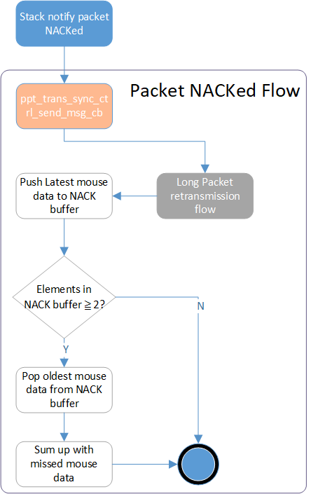
Packet NACKed Flow
As for the customized long packet data. the Long Packet Retransmission Flow is applied to reretransmit the NACKed Long Packet segment.
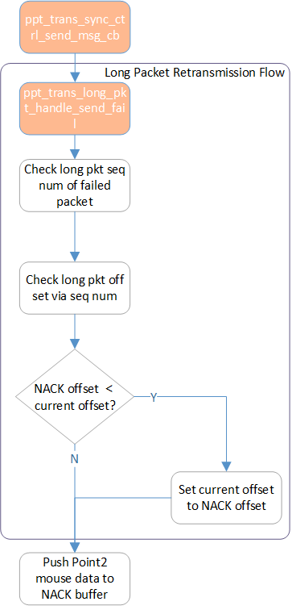
Long Packet Retransmission Flow
Transport Layer Packet Send Fail
When a Packet Send Fail event is received from the Sync Layer, the Transport Layer executes the following Packet Send Fail Flow to avoid the latency increases as well as cursor offset correction.
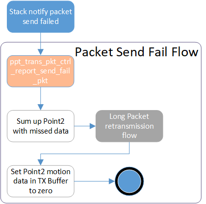
Packet Send Fail Flow
Transport Layer Packet ACK
When a Packet ACKed event is received from the Sync Layer, the Transport Layer executes the following Packet ACKed Flow to clear the NACK Buffer and Long Packet parameters for the retransmission mechanism.

Packet ACKed Flow
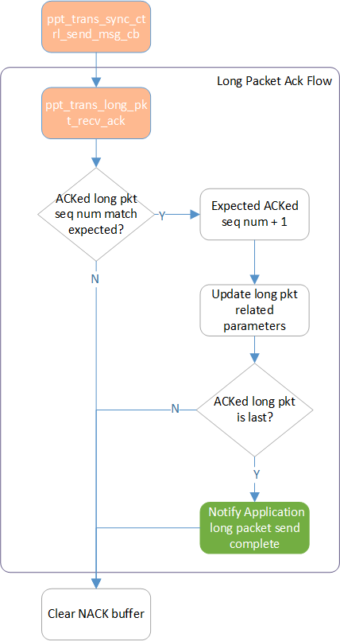
Long Packet Segment ACKed Flow